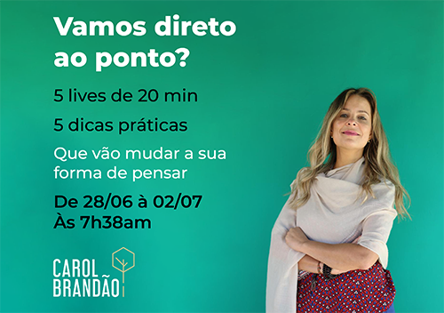
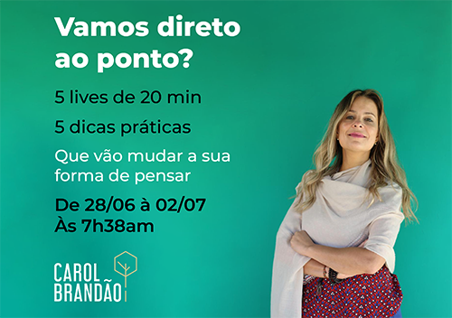
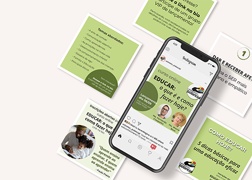
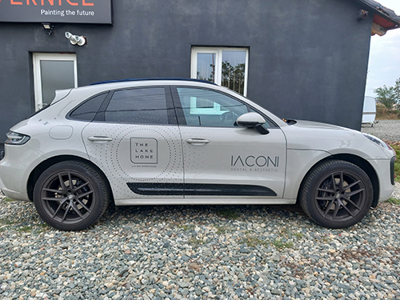
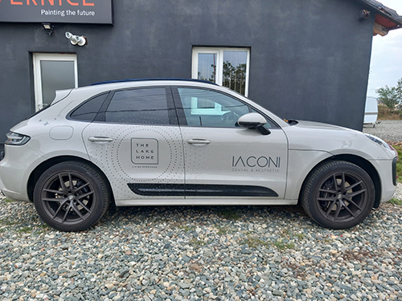

Principais Projetos
■ Programa Trilhando Caminhos


■ Curso online síncrono “EDUCAR: o que é e como fazer hoje?”

■ Curso online assíncrono “Adequações Curriculares: da teoria à pratica”

■ Curso online síncrono “Criando seu filho para ser feliz”

 
